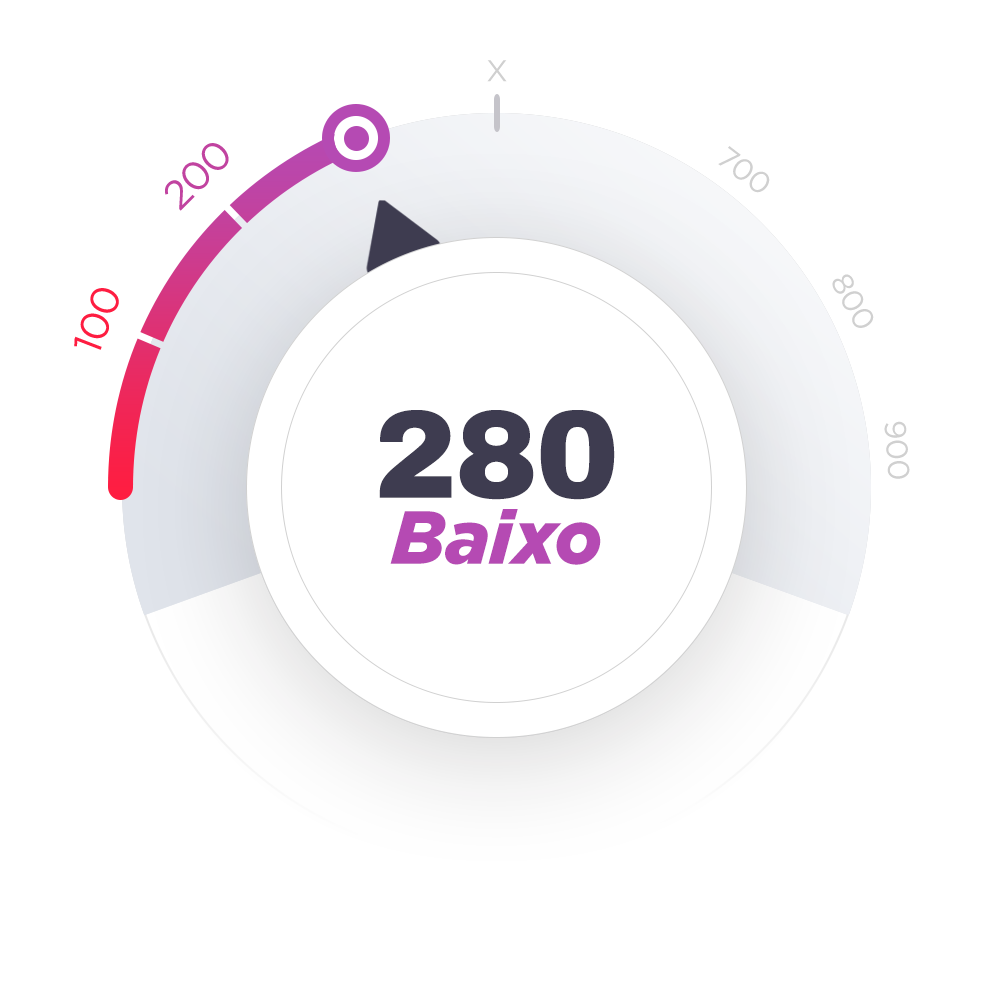

Aviso de Privacidade: As respostas deste quiz são 100% anônimas e confidenciais.
Aviso de Privacidade: As respostas deste quiz são 100% anônimas e confidenciais.
A duração da sua relação sexual está diretamente ligada à força dos músculos do assoalho pélvico. Fortalecê-los é essencial para atrasar a ejaculação e prolongar o tempo na cama conforme o seu desejo.
Aviso de Privacidade: As respostas deste quiz são 100% anônimas e confidenciais.
Músculos pélvicos fortalecidos são essenciais para uma ereção saudável. Ao aprender a controlar esses músculos, você aumenta a circulação sanguínea no pênis e fortalece a ereção.
Aviso de Privacidade: As respostas deste quiz são 100% anônimas e confidenciais.
Aviso de Privacidade: As respostas deste quiz são 100% anônimas e confidenciais.
Primeira fase do diagnóstico:
Aviso de Privacidade: As respostas deste quiz são 100% anônimas e confidenciais.
Aviso de Privacidade: As respostas deste quiz são 100% anônimas e confidenciais.
Aviso de Privacidade: As respostas deste quiz são 100% anônimas e confidenciais.
Este método ajuda os homens a prolongar significativamente o tempo de suas relações, melhorando a vida íntima, mesmo com o passar dos anos.
Aviso de Privacidade: As respostas deste quiz são 100% anônimas e confidenciais.
Aviso de Privacidade: As respostas deste quiz são 100% anônimas e confidenciais.
“Senti os primeiros resultados significativos em apenas 4 semanas e agora não quero parar. Não consigo lembrar a última vez que aproveitei tanto minha vida íntima!”
— Vinícius Andrade
Aviso de Privacidade: As respostas deste quiz são 100% anônimas e confidenciais.
Aviso de Privacidade: As respostas deste quiz são 100% anônimas e confidenciais.
Aviso de Privacidade: As respostas deste quiz são 100% anônimas e confidenciais.
Aviso de Privacidade: As respostas deste quiz são 100% anônimas e confidenciais.
Aviso de Privacidade: As respostas deste quiz são 100% anônimas e confidenciais.
Uma abordagem sem medicações que oferece benefícios reais.
Aviso de Privacidade: As respostas deste quiz são 100% anônimas e confidenciais.
Aviso de Privacidade: As respostas deste quiz são 100% anônimas e confidenciais.
Aviso de Privacidade: As respostas deste quiz são 100% anônimas e confidenciais.
Aviso de Privacidade: As respostas deste quiz são 100% anônimas e confidenciais.
Aviso de Privacidade: As respostas deste quiz são 100% anônimas e confidenciais.
Aviso de Privacidade: As respostas deste quiz são 100% anônimas e confidenciais.
Aviso de Privacidade: As respostas deste quiz são 100% anônimas e confidenciais.
✔️O PROTOCOLO VITAMAX foi desenvolvido por especialistas renomados em saúde sexual masculina.
✔️Baseado em técnicas cientificamente comprovadas, ele também inclui dicas práticas de coaches sexuais altamente qualificados.
✔️Milhares de homens ao redor do mundo já transformaram suas vidas sexuais com este método.
✔️Todos os programas são totalmente personalizados, ajustados para atender os SEUS objetivos específicos.
✔️5 minutos por dia são suficientes para você começar a ver resultados.
✔️Treine em qualquer lugar — em casa, no trabalho ou até durante uma caminhada!
✔️Os exercícios são discretos, ninguém vai perceber que você está praticando.
✔️O programa evolui diariamente, acompanhando o seu progresso.
✔️Inclui teoria, práticas, exercícios, cursos especializados e um plano diário passo a passo para alcançar seus objetivos.
✔️75% dos usuários notam os primeiros resultados em menos de 4 semanas.
Esse score é uma ferramenta de autoavaliação interativa que informa ao participante sobre o seu estado atual com base nas respostas fornecidas.
Parece haver índices de desequilíbrio hormonal. Você relatou uma diminuição significativa no desempenho sexual, e sua frequência de atividade física é baixa, o que pode impactar diretamente seus níveis de testosterona.
Você relatou eventuais dificuldades em manter uma ereção completa, além de uma curta duração das relações sexuais, o que indica uma baixa sensibilidade sexual e possível disfunção erétil leve. Esse quadro pode ser influenciado tanto por fatores físicos (fluxo sanguíneo inadequado) quanto psicológicos.
Você indicou que não treina os músculos do assoalho pélvico e não sabia sobre sua importância. Esse é um dos fatores centrais para o controle ejaculatório e a qualidade das ereções. Músculos fracos podem resultar em ejaculações precoces e dificuldade em manter a ereção.
Seus níveis de estresse e ansiedade foram classificados como elevados. O impacto emocional, incluindo ansiedade relacionada ao desempenho, é uma das causas mais comuns de problemas sexuais, como disfunção erétil e ejaculação precoce. O estresse crônico também está ligado à diminuição da libido.
Seu diagnóstico aponta para uma série de problemas que estão afetando sua saúde sexual
Você está em uma situação crítica e, se não tomar medidas imediatas, esses problemas podem se agravar, levando a consequências graves como disfunção erétil permanente, queda acentuada da libido e até a perda total de controle durante o sexo.
RECUPERE O SEU DESEMPENHO AGORA!